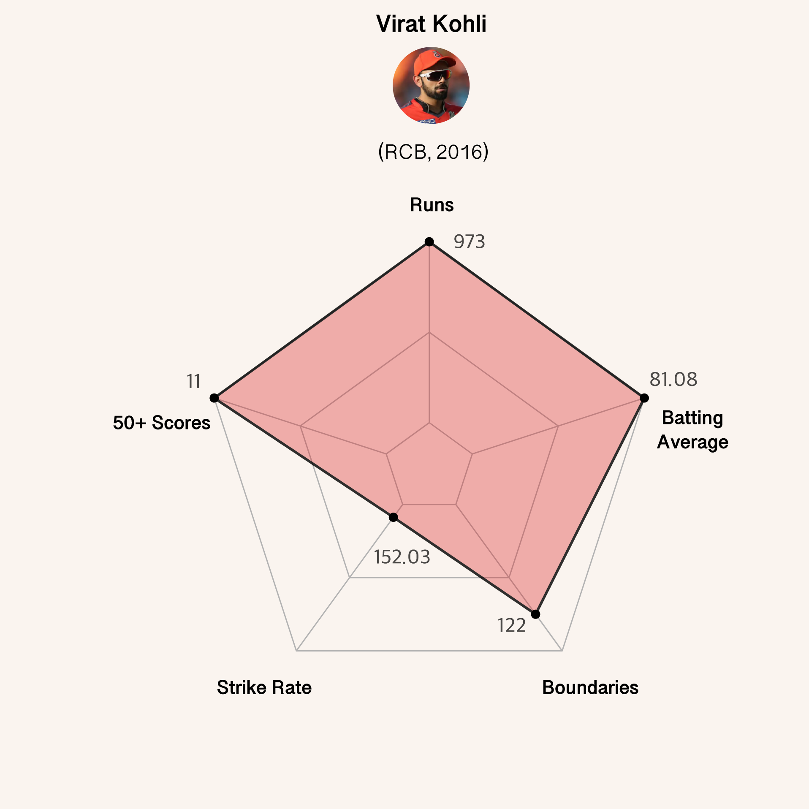

By Jai Kapoor
May 1, 2025
The Indian Premier League (IPL) is India’s franchise cricket tournament that has been played every summer since 2008. It is a league tailor made for the television audience, played in the shortest, fastest, and most entertaining format of cricket - T20. In 2024, the IPL celebrated 17 years of its existence and generated over $16.4 billion in revenue. Having played for the Royal Challengers Bengaluru (RCB) since the IPL’s inauguration in 2008, Virat Kohli is undeniably one of the greatest players in the league’s history. He holds the record for the most runs in the IPL overall (8,014 runs) and has captained RCB in 143 matches. In 2016, Virat Kohli had his best IPL season ever, scoring 973 runs, the most any batsman has ever scored in a year.
As a cricket enthusiast and a die-hard Virat Kohli fan, I wanted to explore this purple patch in more detail and find out how Kohli’s 2016 season stands out amongst any other great year for a batsman. I first looked at his progression through the tournament’s 16 matches to analyse his performances one by one. A pattern emerges - he didn’t just play a few very big knocks, but consistently delivered 50+ scores in games throughout the season.
Kohli scored 4 centuries in 2016, which is the most any player has made in a single year. He also holds the record for the most centuries overall in IPL (8), half of them coming in 2016. This wasn’t just a flashy hot streak - it was a persistent storm stretched across the season, tormenting RCB’s opponents. With 4 matches to go in the league stage, RCB needed to win all 4 to qualify for the playoffs. In those 4 matches, Kohli made 351 runs at an average of 175.5 with 2 centuries. Unfortunately, RCB went on to lose the final match to Sunrisers Hyderabad, ending Kohli’s freakish season in a bittersweet manner. RCB remain trophy-less to this day, despite having the best batting talent available in the IPL.
So yeah, Kohli’s season was pretty great. But how does it stack up against other great years for batsmen? Every year, the highest run scorer in the season is awarded the ‘Orange Cap’. Kohli has won the cap twice - once in 2016 (of course) and once in 2024 (he’s still at it!). I looked at three other Orange Cap winning seasons hailed as some of the best batting performances in the IPL - Jos Buttler for Rajasthan Royals (RR) in 2022, Shubman Gill for Gujarat Titans (GT) in 2023, and Chris Gayle for Royal Challengers Bangalore (RCB) in 2011 - and compared them to Kohli in 2016.
Of the five metrics I used to assess batting performance - Runs, Batting Average (runs made per number of dismissals), Boundaries, Strike Rate (runs made per 100 balls faced), and 50+ scores - Kohli topped the list in three of them. To compare the players, I normalized each value on a 0 to 1 scale, meaning the player with the highest value for a metric gets 1, and the lowest gets 0. All other players fall proportionally in between. The corner dots of the polygons in the radar charts above are visual representations of these scaled values. Apart from Gayle’s staggering strike rate in 2011 (183.13), Kohli is ahead of the curve on all other metrics. Gill and Buttler got close to Kohli’s run tally, but couldn’t cross it despite the overflow of runs scored in the IPL in the last few years.
Kohli’s 2016 season remains a part of IPL folklore and record books. There are calls every year of 973 being in danger, but no batsman in the last eight years has managed to break it. Kohli himself described his season as “abnormal”, and admitted that even he doesn’t know how he did what he did that year. I have been privileged to watch Virat Kohli bat for many years, and as he comes close to retirement, I cherish every opportunity to relive his greatest batting efforts. Beyond the data lie the great stories the 2016 Indian Premier League produced, and those are the ones that make following cricket so worth it for me.
All data points on this page were extracted from two datasets - one with information on every single delivery bowled in the IPL, and one with information on every single match played in the IPL. The ongoing 2025 IPL season is not accounted for here (but has very minimal effects to this analysis). I found the data on Kaggle - you can check it out here.
The data was cleaned and processed in R. The visualizations were created using the ggplot and fmsb libraries, and styled and polished in Adobe Illustrator.
Made for DATA 1500: ‘Data Visualization and Narrative’ at Brown University. I would like to acknowledge Professor Reuben Fischer-Baum for an amazing semester, and my classmates Swaraj and Tanvi for navigating the course with me.